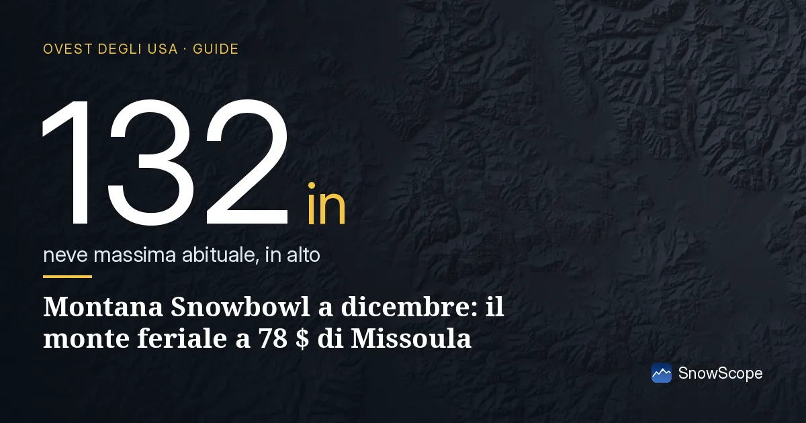

Montana Snowbowl a dicembre: il monte feriale a 78 $ di Missoula
Montana Snowbowl è il monte locale di Missoula: ripido, semplice e con un prezzo onesto, con un listino 2026/27 di 78 $ nei feriali e 85 $ nel weekend. Secondo la nostra serie storica della neve, il centro e la cima del monte sono di solito pronti a metà dicembre. La base è un'altra storia.
Le previsioni neve in tempo reale per Montana Snowbowl nell'app SnowScopeAltezza neve, allerte powder e mappa 3D, gratis.
Un monte da città universitaria
Snowbowl è a breve distanza da Missoula, con 6 impianti e circa 27 mi (43 km) di piste sulla nostra mappatura, da circa 4.990 ft (1.522 m) a 7.530 ft (2.296 m). Non c'è un villaggio da resort; la gente del posto sale, scia duro e torna a casa.

I prezzi
Il listino 2026/27 è breve. Una giornata intera adulti costa 78 $ nei feriali e 85 $ nel weekend e nei festivi. Il biglietto pomeridiano, dalle 12:30, costa 72 $ nei feriali e 77 $ nel weekend e nei festivi.
Snowbowl è anche sull'Indy Pass. L'Indy Base Pass costa 419 $ e l'Indy+ Pass 469 $, ciascuno con due giorni in ogni stazione aderente.

Perché la base è in ritardo
La parte bassa di Snowbowl è bassa per le Rockies settentrionali, e si vede. In un tipico 15 dicembre, la base ha 16 in (40 cm), con solo il 28 % degli inverni sopra i 20 in (50 cm). Mezza montagna, circa 6.260 ft (1.909 m), ha 30 in (76 cm), con l'83 % degli inverni sopra i 20 in, e la cima 37 in (93 cm), con il 91 %.
Settimana per settimana, la quota di settimane con buona neve a mezza montagna è del 67 % nella prima settimana di dicembre, 83 % nella seconda e terza, e 91 % nella settimana di Natale. Un dicembre magro aveva comunque 18 in (45 cm) a mezza montagna il 15. La neve persistente di solito arriva lì nella seconda metà di ottobre.
Snowbowl, Bridger Bowl o Lookout Pass?
Bridger Bowl vicino a Bozeman fa pagare 86 $ online e 99 $ alla cassa, e la sua mezza montagna aveva 20 in (51 cm) in un tipico 15 dicembre, con solo metà degli inverni sopra i 20 in. Lookout Pass, a ovest sulla I-90, costa 63 $ infrasettimanale con prenotazione e aveva 30 in (75 cm).
A inizio dicembre, Snowbowl e Lookout sono le scommesse migliori delle tre sulla neve, e Snowbowl ha il terreno più ripido.
Quando dicembre è magro
I primi 15 inverni della nostra serie storica avevano 35 in (88 cm) a mezza montagna in un tipico 15 dicembre, e ognuno superava i 20 in; gli ultimi 15 avevano 28 in (71 cm) e l'80 %. Lo scorso inverno è iniziato bene, 30 in (76 cm) a quella data. Se arriva un dicembre magro, restate sulle piste battute superiori e controllate la mappa della neve per la prossima tempesta.
Consigli per sciatori
- Sciate nei feriali: la giornata intera costa 78 $, e il biglietto pomeridiano 72 $.
- La strada di accesso è ripida e stretta vicino alla cima: gomme da neve o catene obbligatorie.
- Aspettatevi copertura sottile in basso a inizio dicembre; salite prima di giudicare la giornata.
- Terreno ripido e neve precoce: controllate il bollettino nivologico prima di lasciare la stazione.
Riferimenti e crediti
- Montana Snowbowl, lift tickets 2026/27 (official) montanasnowbowl.com/sbblog/lift-tickets/
- Indy Pass, shop 2026-27 (official) www.indyskipass.com/shop
- Bridger Bowl, lift ticket pricing 2026/27 (official) bridgerbowl.com/tickets-passes/lift-tickets
- Lookout Pass, lift tickets 2026-2027 (official) skilookout.com/lift-tickets/
- OpenSkiMap (mapped lifts and runs) openskimap.org/
- avalanche.org, US avalanche centers and forecasts avalanche.org/
Su questi numeri
Numeri della neve: storico neve SnowScope, 46 inverni passati (1980-81 - 2025-26) alle quote indicate (base, metà, vetta), una ricostruzione della neve passata per un'area corretta per la quota (basata su ERA5-Land; Snow_Hydro 1 km per il Marocco), non i bollettini della località. Neve attuale: la mappa SnowScope. Impianti, piste e quote: mappatura OpenSkiMap. Prezzi: le pagine ufficiali elencate qui sotto, lette il 13 novembre 2026; i prezzi dinamici cambiano con la data e la domanda.
Bollettini valanghe ufficiali: Gallatin National Forest Avalanche Center
Cita questo articolo
Per ricerca, didattica o stampa: numeri e grafici sono liberamente riutilizzabili con licenza CC BY 4.0 citando così.
SnowScope (2026), Montana Snowbowl a dicembre: il monte feriale a 78 $ di Missoula, https://snowscope.app/blog/it/2026/11/montana-snowbowl-missoula-december-cheap-skiing.html, consultato il 2026-11-14
SnowScope (Atlas Labs). (2026, November 14). Montana Snowbowl a dicembre: il monte feriale a 78 $ di Missoula. SnowScope snow reports. https://snowscope.app/blog/it/2026/11/montana-snowbowl-missoula-december-cheap-skiing.html
BibTeX
@misc{snowscope2026montanasnowbowlmissoulad,
author = {{SnowScope (Atlas Labs)}},
title = {Montana Snowbowl a dicembre: il monte feriale a 78 $ di Missoula},
year = {2026},
month = nov,
howpublished = {\url{https://snowscope.app/blog/it/2026/11/montana-snowbowl-missoula-december-cheap-skiing.html}},
note = {Published 2026-11-15 09:34 UTC; accessed 2026-11-14}
}· CC BY 4.0 · Metodi, dati e strumenti →
Montana Snowbowl: neve e temperatura per quota, quest'inverno vs lo scorso (strumenti) →
Segui Montana Snowbowl
Gratis: un messaggio quando arriva la neve e il meteo ogni mattina.